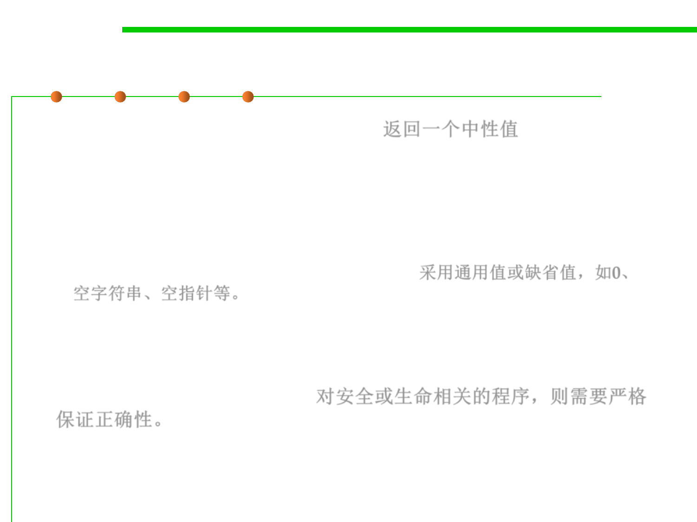
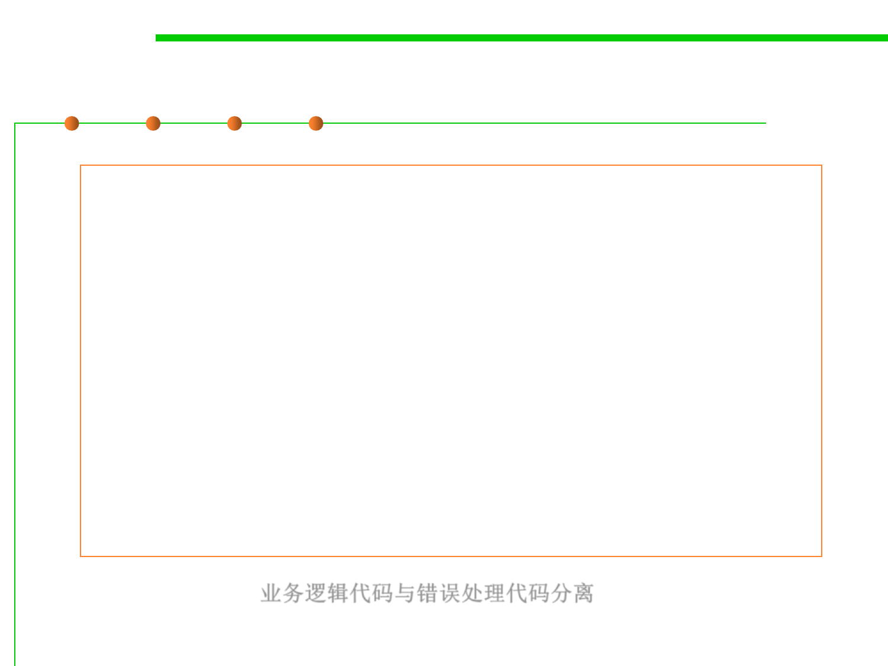
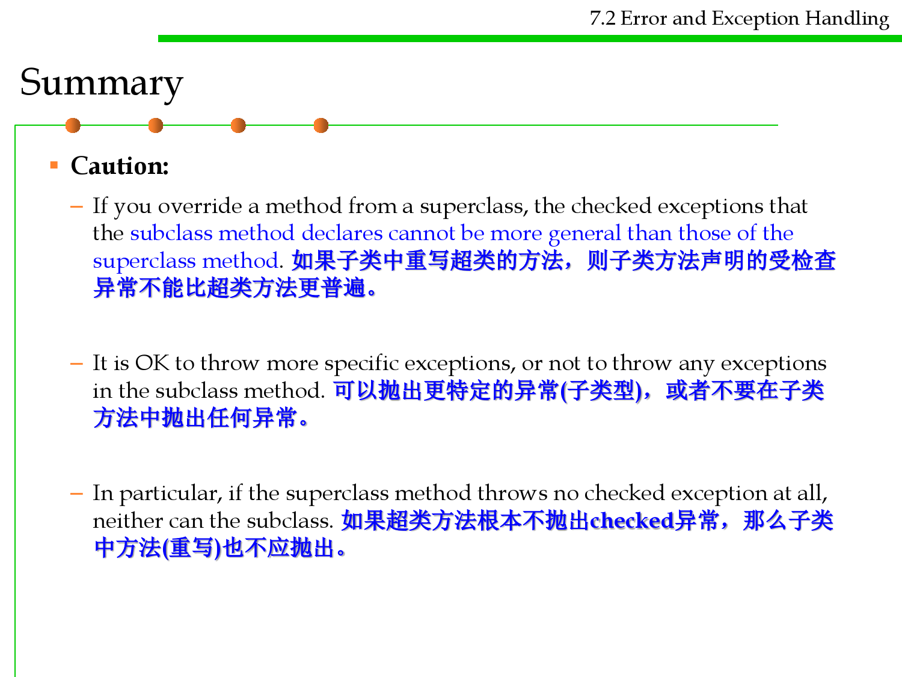
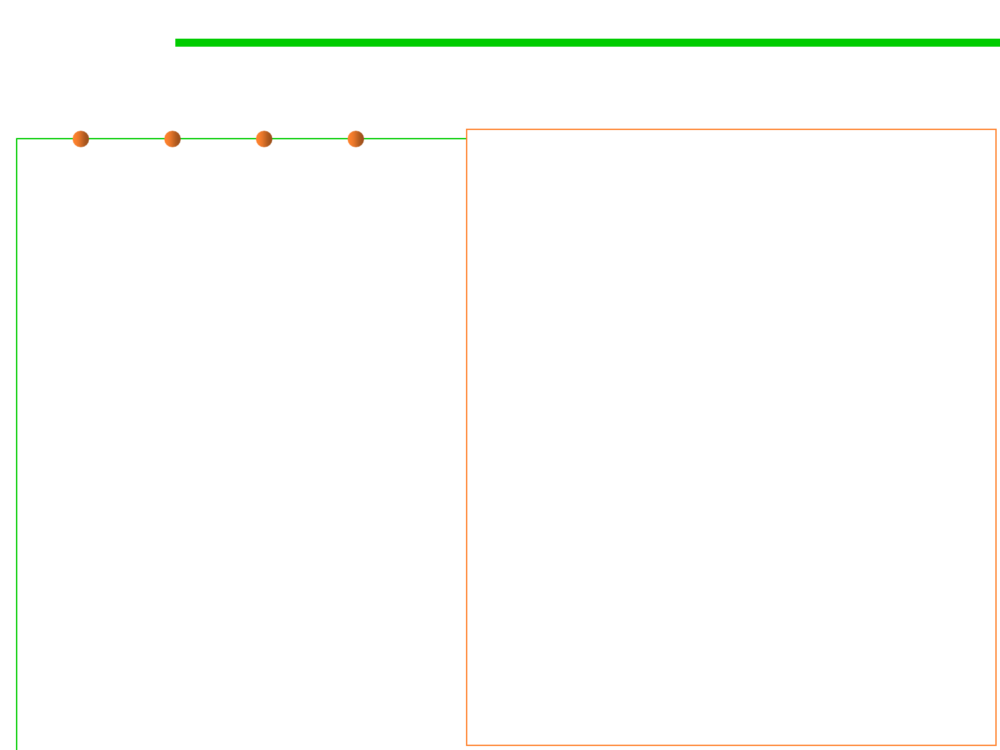

微信公众号[深容Pubmed文献检索] 1. 此处右键：选菜单【翻成中文（简体）】 2. 翻译后，此处右键：选菜单【打印...】成PDF格式
建议屏幕分辨率：1920X1080；如果屏幕太小，可以按Ctrl + 或 Ctrl -缩放网页。

Software Construction
Chapter 7: Software Construction for
Robustness
7.2 Error and Exception Handling
Xu Hanchuan
xhc@hit.edu.cn
April 23, 2019

Outline
7.2 Error and Exception Handling
▪ 1. Generic Error and Exception Handling Techniques
▪ 2. Error and Exception Handling in Java
– Classification of exceptions
– Checked and unchecked exceptions
– How to Throw an Exception
– Creating Exception Classes
– Catching Exceptions
– Rethrowing and Chaining Exceptions
– finally Clause
– The Try-with-Resources Statement
– Analyzing Stack Trace Elements
– Tips for Using Exceptions

Software Construction
1 Generic Error and Exception
Handling Techniques

Errors in this section
7.2 Error and Exception Handling
▪ The errors described in this section is not exactly equivalent to the
“error” in Java.
▪ It means all abnormal things in program.


Sorts of errors
7.2 Error and Exception Handling
▪ User input errors
– In addition to the inevitable typos, some users like to blaze their own trail
instead of following directions. E.g. a user asks to connect to a URL that is
syntactically wrong, the network layer will complain.
▪ Device errors
– Hardware does not always do what you want it to. The printer may be
turned off. A web page may be temporarily unavailable. Devices will often
fail in the middle of a task.
▪ Physical limitations
– Disks can fill up; you can run out of available memory
▪ Code errors
– A method may not perform correctly. e.g. it could deliver wrong answers
or use other methods incorrectly. Computing an invalid array index,
trying to find a nonexistent entry in a hash table, or trying to pop an
empty stack are all examples of a code error.
Error handling
7.2 Error and Exception Handling
▪ Error handling refers to the anticipation, detection, and resolution of
programming, application, and communications errors. 错误处理是指
编程、应用程序和通信中错误的预测、检测和解决。
▪ Specialized programs, called error handlers, are available to deal
with errors.
▪ Possible strategies of error handling:
– Forestall errors if possible 预先防止
– Recover from them when they occur without terminating the application, 错
误中恢复
– Gracefully terminate an affected application and save the error information
to a log file 优雅地退出
Dealing with Errors
7.2 Error and Exception Handling
▪ While encountering errors, or an operation cannot be completed
because of an error, the program ought to either
– Notify the user of an error
– Save all work
– Return to a safe state and enable the user to execute other commands
– Allow the user to save all work and terminate the program gracefully
▪ This may not be easy to do, because the code that detects (or even
causes) the error condition is usually far removed from the code that
can roll back the data to a safe state or the code that can save the
user’s work and exit cheerfully. 难点在于检测错误的代码通常远离可
以回滚数据或保存数据并优雅退出的代码
▪ The mission of error handling is to transfer control from where the
error occurred to an error handler that can deal with the situation.
错误处理的任务就是将控制权从发生错误的位置转移到可以处理错误
的程序

(1) Return a neutral value
7.2 Error and Exception Handling
▪ Return a neutral value (Robustness) 返回一个中性值
– Sometimes the best response to bad data is to continue operating and
simply return a value that’s known to be harmless.
– E.g., A numeric computation might return 0. A string operation might
return an empty string, or a pointer operation might return an empty
pointer. A drawing routine that gets a bad input value for color might use
the default background or foreground color. 采用通用值或缺省值，如0、
空字符串、空指针等。
▪ However, for a drawing program that shows a patient‘s X-ray film,
it is best not to display a neutral value. In this case, it’s better to
close the program than to show the wrong patient data.
(Correctness, not robustness) 对安全或生命相关的程序，则需要严格
保证正确性。
7.2 Error and Exception Handling
(2) Substitute the next piece of valid data
▪ Substitute the next piece of valid data (Robustness) 用下一个有效
值替代
– When processing a stream of data, some circumstances call for simply
returning the next valid data.
– E.g., If you’re reading records from a database and encounter a corrupted
record, you might simply continue reading until you find a valid record. If
you’re taking readings from a thermometer 100 times per second and you
don’t get a valid reading one time, you might simply wait another 1/100th
of a second and take the next reading.

7.2 Error and Exception Handling
(3) Return the same answer as the previous time
▪ Return the same answer as the previous time (Robustness)
– If a thermometer-reading software doesn’t get a reading one time, it might
simply return the same value as last time. Depending on the application,
temperatures might not be very likely to change much in 1/100th of a
second. In a video game, if you detect a request to paint part of the screen
an invalid color, you might simply return the same color used previously.
▪ However, if you are managing a deal on an ATM, you may not
want to use this rule, because that is the previous user's bank
account. (Correctness)

7.2 Error and Exception Handling
(4) Substitute the closest legal value
▪ Substitute the closest legal value (Robustness)
– In some cases, you might choose to return the closest legal value.
– This is often a reasonable approach when taking readings from a
calibrated instrument. The thermometer might be calibrated between 0
and 100 degrees Celsius, for example. If you detect a reading less than 0,
you can substitute 0 which is the closest legal value. If you detect a value
greater than 100, you can substitute 100.
– For a string operation, if a string length is reported to be less than 0, you
could substitute 0.

7.2 Error and Exception Handling
(5) Log a warning message to a file
▪ Log a warning message to a file (Robustness)
– When bad data is detected, you might choose to log a warning message to
a file and then continue on.
– This approach can be used in conjunction with other techniques like
substituting the closest legal value or substituting the next piece of valid
data.
▪ See 7.4 logging

(6) Return an error code
7.2 Error and Exception Handling
▪ Return an error code (Correctness)
– You could decide that only certain parts of a system will handle errors;
other parts will not handle errors locally; they will simply report that an
error has been detected and trust that some other routine higher up in the
calling hierarchy will handle the error.
– The specific mechanism for notifying the rest of the system that an error
has occurred could be any of the following:
• Set the value of a status variable 设置状态值
• Return status as the function’s return value 返回状态值
• Throw an exception using the language’s built-in exception mechanism（ See
7.2.3 Exception handling） 利用异常机制
– In this case, the specific error-reporting mechanism is less important than
the decision about which parts of the system will handle errors directly
and which will just report that they’ve occurred. If security is an issue, be
sure that calling routines always check return codes.
7.2 Error and Exception Handling
(7) Call an error processing routine/object
▪ Call an error processing routine/object (Correctness)
– This is to centralize error handling in a global error handling routine or
error handling object. 集中处理错误
– The advantage is that error processing responsibility can be centralized,
which can make debugging easier. 利于调试
– The tradeoff is that the whole program will know about this central
capability and will be coupled to it. If you ever want to reuse any of the
code from the system in another system, you’ll have to drag the error
handling machinery along with the code you reuse. 不利于重用
▪ This approach has an important security implication.
– If your code has encountered a buffer-overrun, it’s possible that an
attacker has compromised the address of the handler routine or object.
– Thus, once a buffer overrun has occurred while an application is running,
it is no longer safe to use this approach.一旦应用程序运行时发生缓冲区溢
出，使用此方法就不再安全。

(8) Display an error message
7.2 Error and Exception Handling
▪ Display an error message wherever the error is encountered
(Correctness)
– This approach minimizes error-handling overhead, however it does have
the potential to spread user interface messages through the entire
application, which can create challenges when you need to create a
consistent user interface, try to clearly separate the UI from the rest of the
system, or try to localize the software into a different language.
– Also, beware of telling a potential attacker of the system too much.
Attackers sometimes use error messages to discover how to attack a
system.

(9) Handle the error locally
7.2 Error and Exception Handling
▪ Handle the error in whatever way works best locally (Correctness)
– Some designs call for handling all errors locally—the decision of which
specific error-handling method to use is left up to the programmer
designing and implementing the part of the system that encounters the
error.
– This approach provides individual developers with great flexibility, but it
creates a significant risk that the overall performance of the system will
not satisfy its requirements for correctness or robustness.
– Depending on how developers end up handling specific errors, this
approach also has the potential to spread user interface code throughout
the system, which exposes the program to all the problems associated with
displaying error messages.

(10) Shutdown
7.2 Error and Exception Handling
▪ Shutdown (Correctness)
– Some systems shut down whenever they detect an error.
– This approach is useful in safety critical applications.
• For example, if the software that controls radiation equipment for treating cancer
patients receives bad input data for the radiation dosage, shutting down is the
best option.
• We’d much prefer to reboot the machine than to run the risk of delivering the
wrong dosage.
▪ A similar approach can be used to improve security of Microsoft
Windows.
– By default, Windows continues to operate even when its security log is
full.
– But you can configure Windows to halt the server if the security log
becomes full, which can be appropriate in a security-critical environment.
– 当日志写满时，windows允许继续运行，但在严格要求安全的情况的下，
应当停机


7.2 Error and Exception Handling
High-Level Design Implications of Error Processing
▪ With so many options, you need to be careful to handle invalid
parameters in consistent ways throughout the program. 整个程序应
该采用一致的处理机制
▪ The way in which errors are handled affects the software’s ability to
meet requirements related to correctness, robustness, and other non-
functional attributes. 错误处理机制同程序的正确性、健壮性和其他非
功能指标密切相关
▪ Deciding on a general approach to bad parameters is an architectural
or high-level design decision and should be addressed at one of
those levels. 错误处理机制的决策是体系结构级别或者高层的设计决
策问题
▪ Once you decide on the approach, make sure you follow it consistently.

7.2 Error and Exception Handling
High-Level Design Implications of Error Processing
▪ E.g., if you decide to have high-level code handle errors and low-
level code merely report errors, make sure the high level code
actually handles the errors!
▪ Don’t ignore error information! Test the function return value. If
you don’t expect the function ever to produce an error, check it
anyway.
▪ Unless you’ve set an architectural guideline of not checking system
calls for errors, check for error codes after each call.
▪ If you detect an error, include the error number and the
description of the error.
▪ 确定错误处理机制后，要严格执行。
▪ The whole point of defensive programming is guarding against
errors you don’t expect. 防御性编程的重点在于防范不期望的错误。

Software Construction
2 Error and Exception Handling in Java
“Abnormals” in Java
7.2 Error and Exception Handling
▪ The base class for all Exception objects is java.lang.Throwable,
together with its two subclasses java.lang.Exception and
java.lang.Error.
Error and Exception
7.2 Error and Exception Handling
▪ The Error class describes internal system errors and resource
exhaustion situations inside the Java runtime system (e.g.,
VirtualMachineError, LinkageError) that rarely occur. Error类描
述Java虚拟机内部错误(资源耗尽和系统错误等)，多数情况下无需处
理，也无法处理
– You should not throw an object of this type.
– There is little you can do if such an internal error occurs, beyond notifying
the user and trying to terminate the program gracefully.
▪ The Exception class describes the error caused by your program
(e.g. FileNotFoundException, IOException). Exception类描述程序
导致的错误，需要处理
– These errors could be caught and handled by your program (e.g., perform
an alternate action or do a graceful exit by closing all the files, network
and database connections).
An Example
7.2 Error and Exception Handling

Software Construction
(1) What is Exception?

Exceptions
7.2 Error and Exception Handling
▪ An exception is an abnormal event that arises during the execution
of the program and disrupts the normal flow of the program.
▪ Exceptions mechanism are a specific means by which code can pass
along errors or exceptional events to the code that called it. 异常处
理机制将允许代码将错误或者异常事件传递给调用它的代码。
▪ Java allows every method an alternative exit path if it is unable to
complete its task in the normal way. 当方法不能正常完成时，提供
了另外一个退出路径
– In this situation, the method throws an object that encapsulates the error
information. The method exits immediately and does not return any value.
Moreover, execution does not resume at the code that called the method;
方法抛出异常，停止执行，不返回任何值，不执行后续代码。
– Instead, the exception-handling mechanism begins its search for an
exception handler that can deal with this particular error condition. 异常处
理机制捕获异常，寻找到可以处理此异常的代码进行处理。

Benefits of exceptions
7.2 Error and Exception Handling
▪ You can’t forget to handle common failure modes
– Compare: using a flag or special return value
▪ Provide high-level summary of error, and stack trace
– Compare: core dump in C
▪ Improve code structure
– Separate normal code path from exceptional
– Ease task of recovering from failure
▪ Ease task of writing robust, maintainable code

Benefits of exceptions
7.2 Error and Exception Handling
FileInputStream fIn = new FileInputStream(fileName);
if (fIn == null) {
switch (errno) {
case _ENOFILE:
System.err.println(“File not found:” + …);
return -1;
default:
System.err.println(“Something else bad happened:” + …);
return -1;
}
}
缺点：业务逻辑代码
DataInput dataInput = new DataInputStream(fIn);
if (dataInput == null) {
与错误处理代码
交织在一起
System.err.println(“Unknown internal error.”);
return -1; // errno > 0 set by new DataInputStream
}
int i = dataInput.readInt();
if (errno > 0) {
System.err.println(“Error reading binary data from file”);
return -1;
}
return i;
 
Benefits of exceptions
7.2 Error and Exception Handling
FileInputStream fileInput = null;
try {
fileInput = new FileInputStream(fileName);
DataInput dataInput = new DataInputStream(fileInput);
return dataInput.readInt();
}
catch(FileNotFoundException e) {
System.out.println("Could not open file " + fileName);
}
catch (IOException e) {
System.out.println("Couldn’t read file: " + e);
}
finally {
if (fileInput != null) fileInput.close();
}
业务逻辑代码与错误处理代码分离

Software Construction
(2) Classification of exceptions
7.2 Error and Exception Handling
Exceptions are derived from Throwable
▪ In Java programming language, an exception object is always an
instance of a class derived from Throwable.
7.2 Error and Exception Handling

7.2 Error and Exception Handling
RuntimeException and Other Exceptions
▪ When doing Java programming, focus on the Exception hierarchy.
▪ The Exception hierarchy also splits into two branches: Exceptions
that derive from RuntimeException and those that do not.
▪ General rule:
– A RuntimeException happens because you made a programming error.
– Any other exception occurs because a bad thing, such as an I/O error,
happened to your otherwise good program.
7.2 Error and Exception Handling
Runtime Exception and Other Exceptions
▪ Exceptions that inherit from RuntimeException include such
problems as:
– A bad cast(类型转换)
– An out-of-bounds array access
– A null pointer access
– ……
▪ Exceptions that do not inherit from RuntimeException include
– Trying to read past the end of a file
– Trying to open a file that doesn’t exist
– Trying to find a Class object for a string that does not denote an existing
class
– ……

RuntimeException
7.2 Error and Exception Handling
▪ If it is a RuntimeException, it was your fault
– You could have avoided ArrayIndexOutOfBoundsException by testing
the array index against the array bounds.
– The NullPointerException would not have happened had you checked
whether the variable was null before using it.
▪ How about a file that doesn’t exist?
– Can’t you first check whether the file exists, and then open it?
– Actually, the file might be deleted right after you checked for its existence.
Thus, the notion of “existence” depends on the environment, not just on
your code.

Software Construction
(3) Checked and unchecked exceptions
7.2 Error and Exception Handling
Again, the exception hierarchy in Java
7.2 Error and Exception Handling
Checked/unchecked exceptions
▪ Unchecked exception: Programming error, other unrecoverable
failure (Error + RuntimeException)
– No action is required for program to compile, but uncaught exception will
cause program to fail 不要求必须捕获处理
▪ Checked exception: An error that every caller should be aware of
and handle
– Must be caught or propagated, or program won’t compile (The compiler
checks that you provide exception handlers for all checked exceptions) 要
求必须捕获处理，compiler会进行检查


7.2 Error and Exception Handling
Common Unchecked Exception Classes
▪ ArrayIndexOutOfBoundsException: thrown by JVM when your
code uses an array index, which is outside the array's bounds.
int[] anArray = new int[3];
System.out.println(anArray[3]);
Exception in thread "main" java.lang.ArrayIndexOutOfBoundsException: 3
▪ NullPointerException: thrown by the JVM when your code
attempts to use a null reference where an object reference is
required.
String[] strs = new String[3];
System.out.println(strs[0].length());
Exception in thread "main" java.lang.NullPointerException

7.2 Error and Exception Handling
Common Unchecked Exception Classes
▪ NumberFormatException: Thrown programmatically (e.g., by
Integer.parseInt()) when an attempt is made to convert a string to a
numeric type, but the string does not have the appropriate format.
Integer.parseInt("abc");
Exception in thread "main" java.lang.NumberFormatException:
For input string: "abc"
▪ ClassCastException: thrown by JVM when an attempt is made to
cast an object reference fails.
Object o = new Object();
Integer i = (Integer)o;
Exception in thread "main" java.lang.ClassCastException:
java.lang.Object cannot be cast to java.lang.Integer

7.2 Error and Exception Handling
Common Unchecked Exception Classes
▪ IllegalArgumentException: thrown programmatically to indicate
that a method has been passed an illegal or inappropriate argument.
You could re-use this exception for your own methods.
▪ IllegalStateException: thrown programmatically when a method
is invoked and the program is not in an appropriate state for that
method to perform its task. This typically happens when a method is
invoked out of sequence, or perhaps a method is only allowed to be
invoked once and an attempt is made to invoke it again.
▪ NoClassDefFoundError: thrown by the JVM or class loader when
the definition of a class cannot be found.

7.2 Error and Exception Handling
Checked Exception Handling Operations
▪ Five keywords are used in exception handling: try, catch,
finally, throws and throw.
▪ Java’s exception handling consists of three operations:
– Declaring exceptions (throws)
– Throwing an exception (throw)
– Catching an exception (try, catch, finally)
7.2 Error and Exception Handling
Declaring Checked Exceptions by throws
▪ A Java method can throw an exception if it encounters a situation it
cannot handle.
– A method will not only tell the Java compiler what values it can return, it
is also going to tell the compiler what can go wrong. 方法不仅可以告诉编
译器返回值是什么，也可以声明会出现什么样的错误
– E.g. code that attempts to read from a file knows that the file might not
exist or that it might be empty. The code that tries to process the
information in a file therefore will need to notify the compiler that it can
throw some sort of IOException.
▪ The place in which you advertise that your method can throw an
exception is the header of the method; the header changes to reflect
the checked exceptions the method can throw.
public FileInputStream(String name)
throws FileNotFoundException
7.2 Error and Exception Handling
Declaring Checked Exceptions by throws
▪ When you write your own methods, you don’t have to advertise
every possible throwable object that your method might actually
throw. 不需要为方法声明出所有可能的异常
▪ To understand when (and what) you have to advertise in the
throws clause of the methods you write, keep in mind that an
exception is thrown in any of the following four situations: 会抛出
异常的四种情况
– You call a method that throws a checked exception—for example, the
FileInputStream constructor. 调用的方法抛出了异常
– You detect an error and throw a checked exception with the throw
statement. 自己的方法抛出了异常
– You make a programming error, such as a[-1] = 0 that gives rise to an
unchecked exception (ArrayIndexOutOfBoundsException). 程序存在错误
– An internal error occurs in the virtual machine or runtime library. 虚拟机
或者运行时类库错误
7.2 Error and Exception Handling
Declaring Checked Exceptions by throws
▪ If either of the first two scenarios occurs, you must tell the
programmers who will use your method about the possibility of an
exception. 前两种情况需要声明
– Any method that throws an exception is a potential death trap.
– If no handler catches the exception, the current thread of execution
terminates.
▪ As with Java methods that are part of the supplied classes, you
declare that your method may throw an exception with an
exception specification in the method header.
class MyAnimation {
...
public Image loadImage(String s) throws IOException
{...}
}

7.2 Error and Exception Handling
Declare more than one Checked Exceptions
▪ If a method might throw more than one checked exception type,
you must list all exception classes in the header. Separate them by
commas, as in the following example
class MyAnimation {
...
public Image loadImage(String s)
throws FileNotFoundException, EOFException
{
...
}
}

7.2 Error and Exception Handling
Don’t throw Error and unchecked exceptions
▪ Do not need to advertise internal Java errors—that is, exceptions
inheriting from Error. 不需要声明Error类型的异常
– Any code could potentially throw those exceptions, and they are entirely
beyond your control.
▪ Similarly, you should not advertise unchecked exceptions
inheriting from RuntimeException.不需要声明RuntimeException
类型的异常
– These runtime errors are completely under your control.
– If you are so concerned about array index errors, you should spend your
time fixing them instead of advertising the possibility that they can
happen.
void drawImage(int i) throws ArrayIndexOutOfBoundsException
// bad style

Summary
7.2 Error and Exception Handling
▪ Summary:
– A method must declare all the checked exceptions that it might throw.一个
方法必须声明它可能抛出的所有checked异常。
– If your method fails to faithfully declare all checked exceptions, the
compiler will issue an error message. Compiler会检查是否所有checked异
常都被正确声明了
– Unchecked exceptions are either beyond your control (Error) or result
from conditions that you should not have allowed in the first place
(RuntimeException). Unchecked异常不需要处理(要么无法处理，要么不
应该发生)

Summary
7.2 Error and Exception Handling
▪ Caution:
– If you override a method from a superclass, the checked exceptions that
the subclass method declares cannot be more general than those of the
superclass method. 如果子类中重写超类的方法，则子类方法声明的受检查
异常不能比超类方法更普遍。
– It is OK to throw more specific exceptions, or not to throw any exceptions
in the subclass method. 可以抛出更特定的异常(子类型)，或者不要在子类
方法中抛出任何异常。
– In particular, if the superclass method throws no checked exception at all,
neither can the subclass. 如果超类方法根本不抛出checked异常，那么子类
中方法(重写)也不应抛出。

Software Construction
(4) How to Throw an Exception

How to Throw an Exception
7.2 Error and Exception Handling
▪ Suppose you have a method, readData, that is reading in a file.
Something terrible has happened in your code.
▪ You may decide this situation is so abnormal that you want to
throw an exception EOFException with the description “Signals
that an EOF has been reached unexpectedly during input.”
throw new EOFException();
or
EOFException e = new EOFException();
throw e;

How to Throw an Exception
7.2 Error and Exception Handling
String readData(Scanner in) throws EOFException
{
...
while (. . .)
{
if (!in.hasNext()) // EOF encountered
{
if (n < len)
throw new EOFException();
}
...
}
return s;
}

How to Throw an Exception
7.2 Error and Exception Handling
▪ The EOFException has a second constructor that takes a string
argument.
▪ You can put this to good use by describing the exceptional
condition more carefully.
String gripe = "Content-length: " + len + ", Received: " + n;
throw new EOFException(gripe);
How to Throw an Exception
7.2 Error and Exception Handling
▪ Throwing an exception is easy if one of the existing exception
classes works for you:
– Find an appropriate exception class. 找到或者设计合适的异常类
– Make an object of that class. 创建异常类的对象
– Throw it. 抛出
▪ Once a method throws an exception, it does not return to its caller.
This means you do not have to worry about cooking up a default
return value or an error code. 一旦方法抛出一个异常，它就不会返回
到调用者，这意味着不需要担心会产生默认返回值或错误编码。

Software Construction
(5) Creating Exception Classes

Creating Exception Classes
7.2 Error and Exception Handling
▪ Your code may run into a problem which is not adequately
described by any of the standard exception classes.
▪ In this case, it is easy enough to create your own exception class.
▪ Just derive it from Exception, or from a child class of Exception
such as IOException.
▪ It is customary to give both a default constructor and a constructor
that contains a detailed message.习惯上同时给出一个默认构造函数
和一个包含详细消息的构造函数。
– The toString method of the Throwable superclass returns a string
containing that detailed message, which is handy for debugging.

Creating Exception Classes
7.2 Error and Exception Handling
class FileFormatException extends IOException
{
public FileFormatException() {}
public FileFormatException(String gripe)
{
super(gripe);
}
}
String readData(BufferedReader in) throws FileFormatException {
...
while (. . .){
if (ch == -1) { // EOF encountered
if (n < len)
throw new FileFormatException();
}
...
}
return s;
}


Software Construction
(6) Catching Exceptions

Catching Exceptions
7.2 Error and Exception Handling
▪ If an exception occurs that is not caught anywhere, the program
will terminate and print a message to the console, giving the type
of the exception and a stack trace.
▪ GUI programs catch exceptions, print stack trace messages, and
then go back to the user interface processing loop.
▪ To catch an exception, set up a try/catch block :
try {
code
more code
more code
}
catch (ExceptionType e) {
handler for this type
}

Catching Exceptions
7.2 Error and Exception Handling
▪ If any code inside the try block throws an exception of the class
specified in the catch clause, then
– The program skips the remainder of the code in the try block.
– The program executes the handler code inside the catch clause.
当try块中出现异常时，将忽略出现异常位置之后的代码，由catch子句进行异
常处理。
– If none of the code inside the try block throws an exception, then the
program skips the catch clause. 无异常时，catch子句不执行
– If any of the code in a method throws an exception of a type other than the
one named in the catch clause, this method exits immediately. (Hopefully,
one of its callers has already provided a catch clause for that type.) 如果
catch语句中没有匹配的异常处理，则被访问的程序退出。

Catching Exceptions
7.2 Error and Exception Handling
public void read(String filename) {
try {
InputStream in = new FileInputStream(filename);
int b;
while ((b = in.read()) != -1) {
process input...
}
}
catch (IOException exception) {
exception.printStackTrace();
}
}

7.2 Error and Exception Handling
Pass the exception on to the caller
▪ Another choice to handle the exceptions: do nothing at all and
simply pass the exception on to the caller. 另一种处理异常的策略：将异
常处理交给调用者，某些情况下，调用者更清楚如何处理。
– Let the caller of the read method worry about it!
– Might be the best choice (prefer more correctness to robustness).
▪ If we take that approach, then we have to advertise the fact that the
method may throw an IOException. 此时，需要在方法声明中声明异常
public void read(String filename) throws IOException {
InputStream in = new FileInputStream(filename);
int b;
while ((b = in.read()) != -1) {
process input
}
}
▪ The compiler strictly enforces the throws specifiers. If you call a
method that throws a checked exception, you must either handle it
or pass it on. 调用声明了checked异常的方法，则必须处理异常或继续传递。

7.2 Error and Exception Handling
Try/catch and throw an exception?
▪ As a general rule, you should catch those exceptions that you know
how to handle and propagate those that you do not know how to
handle. 准则：处理知道如何处理的异常，传播不知道如何处理的异常。
▪ When you propagate an exception, you must add a throws specifier
to alert the caller that an exception may be thrown. 传播异常时，通过
throws通知调用者处理。
▪ Notice:
– If you are writing a method that overrides a superclass method which
throws no exceptions, then you must catch each checked exception in the
method’s code. 如果子类方法重写了父类方法，父类方法没有抛出异常，则
子类方法中需要catch所有的checked异常(不能继续传播)
– You are not allowed to add more throws specifiers to a subclass method
that are present in the superclass method. 子类继承自父类的方法，在子类
中不能增加异常

7.2 Error and Exception Handling
Get detailed information from an Exception
▪ The exception object may contain information about the nature of
the exception.
– To find out more about the object, try e.getMessage() to get the detailed
error message (if there is one)
– Use e.getClass().getName() to get the actual type of the exception
object.

Catching Multiple Exceptions
7.2 Error and Exception Handling
▪ You can catch multiple exception types in a try block and handle
each type differently.
▪ Use a separate catch clause for each type as in the following
example:
try {
code that might throw exceptions
}
catch (FileNotFoundException e) {
emergency action for missing files
}
catch (UnknownHostException e) {
emergency action for unknown hosts
}
catch (IOException e) {
emergency action for all other I/O problems
}

Software Construction
(7) Rethrowing and Chaining
Exceptions

7.2 Error and Exception Handling
Rethrowing and Chaining Exceptions
▪ You can throw an exception in a catch clause.
▪ Typically, you do this when you want to change the exception type.
If you build a subsystem that other programmers use, it makes a
lot of sense to use an exception type that indicates a failure of the
subsystem. 用于改变异常的类型，对异常信息进行重新封装。
– E.g., ServletException, the code that executes a servlet may not want to
know in minute detail what went wrong in the servlet, but it definitely
wants to know that the servlet was at fault.
▪ Here is how you can catch an exception and rethrow it:
try {
access the database
}
catch (SQLException e) {
throw new ServletException("database error: " + e.getMessage());
}
▪ Here, the ServletException is constructed with the message text
of the exception.

7.2 Error and Exception Handling
Rethrowing and Chaining Exceptions
▪ However, it is a better idea to set the original exception as the
“cause” of the new exception: 将原始异常信息传递出去
try {
access the database
}
catch (SQLException e) {
Throwable se = new ServletException("database error");
se.initCause(e);
throw se;
}
▪ When the exception is caught, the original exception can be
retrieved
Throwable e = se.getCause();
▪ This wrapping technique is highly recommended. It allows you to
throw high level exceptions in subsystems without losing the
details of the original failure.这种包装技术允许在子系统中抛出高级异常
，而不会丢失原始失败的细节。

Software Construction
(8) finally Clause

finally Clause
7.2 Error and Exception Handling
▪ When your code throws an exception, it stops processing the
remaining code in your method and exits the method.
▪ This is a problem if the method has acquired some resource (files,
database connections,…), which only this method knows about,
and that resource must be cleaned up. 问题:出现异常时，需要清理
已经占用的资源
▪ One solution is to catch and re-throw all exceptions.
▪ But this solution is tedious because you need to clean up the resource
allocation in two places—in the normal code and in the exception
code.
▪ Java has a better solution: the finally clause.

Try-Catch-Finally
7.2 Error and Exception Handling
▪ The code in the finally clause executes whether or not an exception
was caught. Finally部分的代码，是否捕获异常都会被执行。
▪ In the following example, the program will close the file under all
circumstances:
InputStream in = new FileInputStream(. . .);
try {
// 1
code that might throw exceptions
// 2
}
catch (IOException e) {
// 3
show error message
// 4
}
Finally {
// 5
in.close();
}
// 6
Try-Catch-Finally: case 1
7.2 Error and Exception Handling
▪ Look at the three possible
situations in which the program
will execute the finally clause.
▪ Case 1: The code throws no
exceptions. 没有抛出异常
– In this case, the program first
executes all the code in the try
block.
– Then, it executes the code in the
finally clause.
– Afterwards, execution continues
with the first statement after the
finally clause.
– In other words, execution passes
through points 1, 2, 5, and 6.
InputStream in = new FileInputStream(. . .);
try {
// 1
code that might throw exceptions
// 2
}
catch (IOException e) {
// 3
show error message
// 4
}
Finally {
// 5
in.close();
}
// 6
Try-Catch-Finally: case 2
7.2 Error and Exception Handling
▪ Case 2: The code throws an exception that is caught in a catch
clause and the catch clause does not throw an exception. 抛出一个
被捕获的异常，catch没有继续抛出异常
– The program executes all code in the try block, up to the point at which
the exception was thrown. The remaining code in the try block is skipped.
The program then executes the code in the matching catch clause, and
then the code in the finally clause.
InputStream in = new FileInputStream(. . .);
– If the catch clause does not throw
an exception, the program executes
try {
// 1
code that might throw exceptions
the first line after the finally clause.
// 2
}
– Execution passes through points 1,
3, 4, 5, and 6.
catch (IOException e) {
// 3
show error message
// 4
}
Finally {
// 5
in.close();
}
// 6

Try-Catch-Finally: case 3
7.2 Error and Exception Handling
▪ Case 3: The code throws an exception that is caught in a catch
clause and the catch clause throws an exception. 抛出一个被捕获
的异常，catch继续抛出异常
– The program executes all code in the try block, up to the point at which
the exception was thrown. The remaining code in the try block is skipped.
The program then executes the code in the matching catch clause, and
then the code in the finally clause.
– If the catch clause throws an
InputStream in = new FileInputStream(. .
.);
exception, then the exception
is thrown back to the caller of
try {
// 1
code that might throw exceptions
this method, and execution
passes through points 1, 3, and 5
// 2
}
catch (IOException e) {
only.
// 3
show error message
// 4
}
Finally {
// 5
in.close();
}
// 6

Try-Catch-Finally: case 4
7.2 Error and Exception Handling
▪ Case4: The code throws an exception that is not caught in any catch
clause. 抛出一个未被捕获的异常
– Here, the program executes all code in the try block until the exception is
thrown.
– The remaining code in the try block is skipped.
– Then, the code in the finally
clause is executed, and the
exception is thrown back to the
caller of this method.
– Execution passes through points
1 and 5 only.
InputStream in = new FileInputStream(. . .);
try {
// 1
code that might throw exceptions
// 2
}
catch (IOException e) {
// 3
show error message
// 4
}
Finally {
// 5
in.close();
}
// 6

7.2 Error and Exception Handling
Using finally without a Catch
▪ You can use the finally clause without a catch clause.
▪ For example, consider the following try statement:
InputStream in = . . .;
try {
code that might throw exceptions
}
finally {
in.close();
}
▪ The in.close() statement in the finally clause is executed
whether or not an exception is encountered in the try block.
▪ If an exception is encountered, it is rethrown and must be caught
in another catch clause.

Software Construction
(9) The Try-with-Resources
Statement

7.2 Error and Exception Handling
The Try-with-Resources Statement
▪ Even good programmers usually get it wrong
– Sun’s guide to Persistent Connections got it wrong in code that claimed to
be exemplary
– Solution on page 88 of Bloch and Gafter’s Java Puzzlers is badly broken; no
one noticed for years
▪ 70% of the uses of the close method in the JDK itself were wrong
in 2008(!)
▪ Even “correct” idioms for manual resource management are
deficient.
7.2 Error and Exception Handling
The Try-with-Resources Statement
▪ Java SE 7 provides a useful shortcut to the code pattern provided
the resource belongs to a class that implements the AutoCloseable
interface. 对于实现了AutoCloseable接口的资源，Java提供自动close
资源的方法
▪ That interface has a single method
void close() throws Exception
▪ In its simplest variant, the try-with-resources statement has the
form
open a resource
try (Resource res = . . .) {
work with res
=
}
try {
work with the resource
}
finally {
close the resource
}

7.2 Error and Exception Handling
The Try-with-Resources Statement
▪ When try block exits, then res.close() is called automatically.
▪ Here is a typical example—reading all words of a file
try (Scanner in = new Scanner(new FileInputStream(“/dict/words”), “UTF-8”))
{
while (in.hasNext())
System.out.println(in.next());
}
▪ When the block exits normally, or when there was an exception,
the in.close() method is called, exactly as if you had used a
finally block.

7.2 Error and Exception Handling
The Try-with-Resources Statement
▪ Specify multiple resources:
try (Scanner in = new Scanner(new
FileInputStream("/usr/share/dict/words"), "UTF-8");
PrintWriter out = new PrintWriter("out.txt"))
{
while (in.hasNext())
out.println(in.next().toUpperCase());
}
▪ No matter how the block exits, both in and out are closed.
▪ If you programmed this by hand, you would need two nested
try/finally statements.


Software Construction
(10) Analyzing Stack Trace Elements

7.2 Error and Exception Handling
Method Call Stack
public class MethodCallStackDemo {
▪ A typical application involves
many levels of method calls,
public static void main(String[] args) {
System.out.println("Enter main()");
methodA();
which is managed by a so-
called method call stack.
System.out.println("Exit main()");
}
▪ A stack is a last-in-first-out
queue.
▪ What’s the result?
public static void methodA() {
System.out.println("Enter methodA()");
methodB();
System.out.println("Exit methodA()");
}
– Enter main()
– Enter methodA()
– Enter methodB()
– Enter methodC()
public static void methodB() {
System.out.println("Enter methodB()");
methodC();
System.out.println("Exit methodB()");
}
– Exit methodC()
– Exit methodB()
– Exit methodA()
– Exit main()
public static void methodC() {
System.out.println("Enter methodC()");
System.out.println("Exit methodC()");
}
}
Method Call Stack
7.2 Error and Exception Handling
▪ The sequence of events:
– JVM invoke the main().
– main() pushed onto call stack, before invoking
methodA().
– methodA() pushed onto call stack, before invoking
methodB().
– methodB() pushed onto call stack, before invoking
methodC().
– methodC() completes.
– methodB() popped out from call stack and completes.
– methodA() popped out from the call stack and
completes.
– main() popped out from the call stack and completes.
Program exits.
Call Stack Trace
7.2 Error and Exception Handling
▪ Suppose methodC() carries out a "divide-by-0" operation, which
triggers an ArithmeticException.
▪ The exception message clearly shows the method call stack
trace with the relevant statement line numbers:
Enter main()
Enter methodA()
Enter methodB()
Enter methodC()
Exception in thread "main" java.lang.ArithmeticException: / by zero
at MethodCallStackDemo.methodC(MethodCallStackDemo.java:22)
at MethodCallStackDemo.methodB(MethodCallStackDemo.java:16)
at MethodCallStackDemo.methodA(MethodCallStackDemo.java:10)
at MethodCallStackDemo.main(MethodCallStackDemo.java:4)

Call Stack Trace
7.2 Error and Exception Handling
▪ Process:
– MethodC() triggers an ArithmeticException. As it does not handle this
exception, it popped off from the call stack immediately.
– MethodB() also does not handle this exception and popped off the call
stack. So does methodA() and main() method.
– The main() method passes back to JVM, which abruptly terminates the
program and print the call stack trace.
Enter main()
Enter methodA()
Enter methodB()
Enter methodC()
Exception in thread "main" java.lang.ArithmeticException: / by zero
at MethodCallStackDemo.methodC(MethodCallStackDemo.java:22)
at MethodCallStackDemo.methodB(MethodCallStackDemo.java:16)
at MethodCallStackDemo.methodA(MethodCallStackDemo.java:10)
at MethodCallStackDemo.main(MethodCallStackDemo.java:4)

Exception & Call Stack
7.2 Error and Exception Handling
▪ When an exception occurs inside a Java method, the method creates
an Exception object and passes the Exception object to the JVM
(i.e., the method "throw" an Exception).
▪ The Exception object contains the type of the exception, and the
state of the program when the exception occurs.
▪ The JVM is responsible for finding an exception handler to process
the Exception object.
– It searches backward through the call stack until it finds a matching
exception handler for that particular class of Exception object (in Java
term, it is called "catch" the Exception).
– If the JVM cannot find a matching exception handler in all the methods in
the call stack, it terminates the program.
– 异常处理机制：异常被抛出时，JVM根据异常中的信息查找处理异常的代
码，通过调用栈进行反向查找，直到找到为止，如果找不到则终止程序。
Exception & Call Stack
7.2 Error and Exception Handling
▪ Suppose that methodD() encounters an abnormal condition and
throws a XxxException to the JVM.
▪ The JVM searches backward through the call stack for a matching
exception handler.
▪ It finds methodA() having
a XxxException handler
and passes the exception
object to the handler.
– Notice that methodC() and
methodB() are required to
declare “throws
XxxException” in their
method signatures in order
to compile the programm.
– 方法B和C需要声明抛出此异常(进行传播)，以通过编译

7.2 Error and Exception Handling
Analyzing Stack Trace Elements
▪ A stack trace is a listing of all pending method calls at a particular
point in the execution of a program.
▪ You have almost certainly seen stack trace listings—they are
displayed whenever a Java program terminates with an uncaught
exception.
▪ You can access the text description of a stack trace by calling the
printStackTrace method of the Throwable class.
Throwable t = new Throwable();
StringWriter out = new StringWriter();
t.printStackTrace(new PrintWriter(out));
String description = out.toString();
Stack trace
7.2 Error and Exception Handling

7.2 Error and Exception Handling
Analyzing Stack Trace Elements
▪ A more flexible approach is the getStackTrace method that yields
an array of StackTraceElement objects, which you can analyze in
your program.
Throwable t = new Throwable();
StackTraceElement[] frames = t.getStackTrace();
for (StackTraceElement frame : frames)
analyze frame
▪ The StackTraceElement class has methods to obtain the file name
and line number, as well as the class and method name, of the
executing line of code.
▪ The toString method yields a formatted string containing all of
this information.

Software Construction
(11) Tips for Using Exceptions

7.2 Error and Exception Handling
Exception handling cannot replace test
▪ Exception handling is not supposed to replace a simple test. 异常处
理不能代替简单的测试
– As an example, we wrote some code that tries 10,000,000 times to pop an
empty stack. It first does this by finding out whether the stack is empty.
if (!s.empty()) s.pop();
– Next, we force it to pop the stack no matter what and then catch the
EmptyStackException that tells us we should not have done that.
try {
s.pop();
}
catch (EmptyStackException e) { }
▪ The version that calls isEmpty ran in 646 milliseconds. The version
that catches the EmptyStackException ran in 21,739 milliseconds ---
it took far longer to catch an exception than to perform a simple test.
▪ The moral is: Use exceptions for exceptional circumstances only.
7.2 Error and Exception Handling
Do not micromanage exceptions
▪ Do not micromanage exceptions. 不要过分地细化异常
– Many programmers wrap every statement in a separate try block.
– Next, we force it to pop the stack no matter what and then catch the
EmptyStackException that tells us we should not have done that.
– 将正常处理与异常处理分开
PrintStream out;
Stack s;
for (i = 0; i < 100; i++) {
try {
n = s.pop();
}
catch (EmptyStackException e) {
// stack was empty
}
try {
out.writeInt(n);
}
catch (IOException e) {
// problem writing to file
}
}
try {
for (i = 0; i < 100; i++) {
n = s.pop();
out.writeInt(n);
}
}
catch (IOException e) {
// problem writing to file
}
catch (EmptyStackException e) {
// stack was empty
}

7.2 Error and Exception Handling
Make good use of the exception hierarchy
▪ Make good use of the exception hierarchy. 利用好异常层次结构
– Don’t just throw an Exception. Find an appropriate subclass or create your
own. 不要只抛出Exception
– Don’t just catch Throwable. It makes your code hard to read and maintain.
不要只捕获Throwable异常
– Respect the difference between checked and unchecked exceptions.
Checked exceptions are inherently burdensome—don’t throw them for
logic errors.考虑已检查异常与未检查异常的区别
– Do not hesitate to turn an exception into another exception that is more
appropriate. For example, when you parse an integer in a file, catch the
NumberFormatException and turn it into a subclass of IOException or
MySubsystemException. 将一种异常转换成另一种更加适合的异常时不要
犹豫

7.2 Error and Exception Handling
“Tough love” works better than indulgence
▪ When you detect an error, “tough love” works better than
indulgence. 在检测错误时，“苛刻”要比放任好
– Some programmers worry about throwing exceptions when they detect
errors.
– Maybe it would be better to return a dummy value rather than throw an
exception when a method is called with invalid parameters? For example ,
should Stack.pop return null, or throw an exception when a stack is
empty? Stack.pop 返回空值还是抛出异常？
– We think it is better to throw a EmptyStackException at the point of
failure than to have a NullPointerException occur at later time. 此时，
抛出异常比稍后出现空指针访问更好
7.2 Error and Exception Handling
Propagating exceptions is not a sign of shame
▪ Propagating exceptions is not a sign of shame. 不要羞于传递异常
– Many programmers feel compelled to catch all exceptions that are thrown.
– If they call a method that throws an exception, such as the
FileInputStream constructor or the readLine method, they instinctively
catch the exception that may be generated.
– Often, it is actually better to propagate the exception instead of catching it:
public void readStuff(String filename) throws IOException
// not a sign of shame!
{
InputStream in = new FileInputStream(filename);
...
}
– Higher-level methods are often better equipped to inform the user of
errors or to abandon unsuccessful commands. 让高层方法通知用户发生了
错误，或者放弃不成功的命令更加适宜
▪ NOTE: “throw early, catch late.”

7.2 Error and Exception Handling
Other Tips for Using Exceptions
▪ Avoid unnecessary checked exceptions
▪ Favor standard exceptions
– Absolutely it makes sense to reuse Exception classes when they reasonably
describe the scenario that caused the exception to be thrown. Java预定义的一
些异常，如果能够很好的说明情况，则建议复用
– IllegalArgumentException – invalid parameter value
– IllegalStateException – invalid object state
– NullPointerException – null paramwhere prohibited
– IndexOutOfBoundsException – invalid index param
▪ Throw exceptions appropriate to abstraction 根据抽象级别抛出合适的异常
，高层应该捕获低层的异常，并抛出在高层抽象可以理解的异常
▪ Document all exceptions thrown by each method
– Checked and unchecked
– But don’t declare unchecked exceptions!

7.2 Error and Exception Handling
Other Tips for Using Exceptions
▪ Include failure-capture info in detail message
throw new IlegalArgumentException("Modulus must be prime: " + modulus);
▪ Don’t ignore exceptions
// Empty catch block IGNORES exception – Bad smell in code!
try {
...
}
catch (SomeException e) { }


Software Construction
The end
April 23, 2019